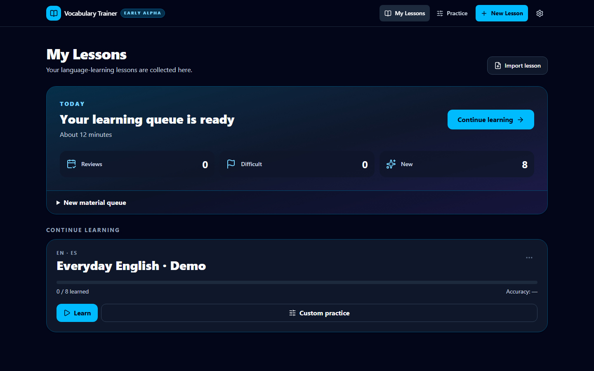
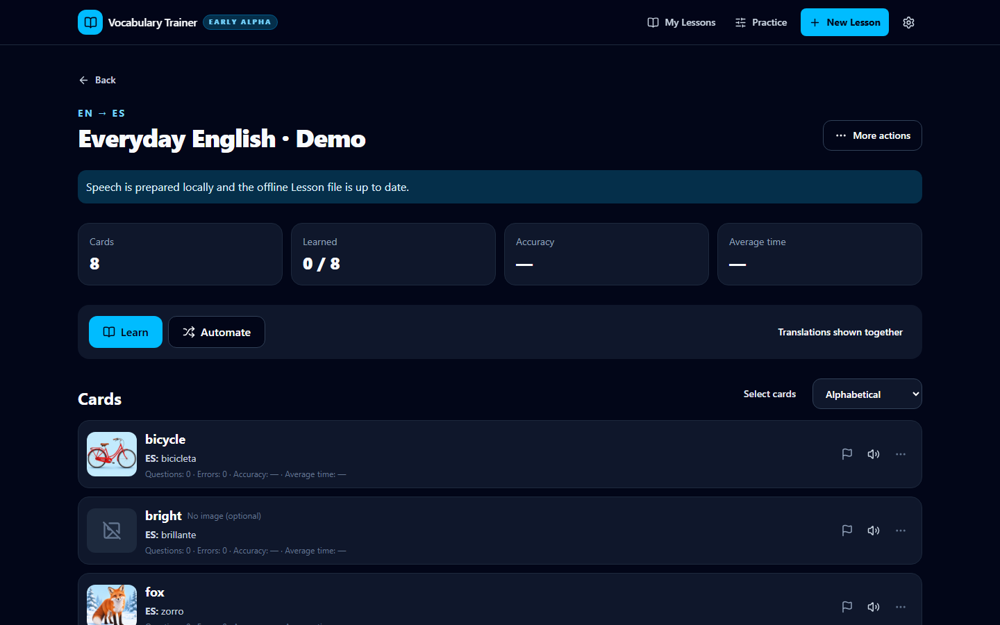

Local-first language learning
Vocabulary you choose.
Practice that adapts.
Turn personal word lists into a focused learning loop across meaning, images, sound, and exact recall. Mistakes return until the word is genuinely usable—not merely familiar.
- Works offline
- 10 interface languages
- Your data stays local

Not another flashcard pile.
One word becomes a set of independent recall skills.The learning loop
Recognition is the start.
Reliable recall is the goal.
Each lesson moves from guided recognition to active production. Errors are delayed, reshuffled, and brought back in a different form.
-
01
Meaning → word
Build the first connection with focused multiple choice.
-
02
Word → image
Separate visual understanding from translation memory.
-
03
Audio → meaning
Train recognition from locally stored speech and recordings.
-
04
Strict recall
Type the target exactly, then automate it under time pressure.
Adaptive repetition
A mistake does not reset the lesson.
The card returns after other tasks, preserving context without letting the learner memorize the previous screen. Difficult cards stay visible across learning and custom practice.
Working product
A complete core workflow,
not a concept screen.
Create or import a lesson, learn it in three stages, review due cards, and build targeted practice without sending vocabulary to a server.

Designed for ownership
Your words, images, audio, and progress stay with you.
- Local-firstIndexedDB and portable lesson files
- Offline-readyPractice and speech assets work without a connection
- ReusableOne global card can belong to multiple lessons
- PortablePWA plus a self-contained Windows build
Claude roadmap
From a rough word list to a teachable lesson.
The next product slice uses Claude to turn learner-provided vocabulary into concise context, natural examples, and plausible distractors—while the practice engine and personal learning data remain local.
Planned integration · clearly separated from the working alphaEarly alpha · Windows & web
The core learning workflow is ready to try.
Lesson authoring, three-stage learning, custom practice, offline audio, imports, exports, and local progress are functional. Authoring polish, voice management, and the Claude-assisted workflow are still in active development.